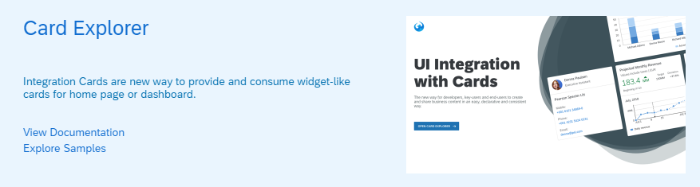

What's New in OpenUI5 1.68
With this release OpenUI5 is upgraded from version 1.67 to 1.68.
New Features
|
Format Option parseKeepsEmptyString The format option parseKeepsEmptyString for sap.ui.model.odata.type.String is now available. This format option is set to true by sap.ui.model.odata.v4.AnnotationHelper.format, this means, the changed behavior applies automatically if templating is used with v4.AnnotationHelper.format. |
|
New Semantic Rendering With RenderManager The RenderManager class provides a new way of semantic rendering for controls. It allows for an easier and more efficient type of rendering by updating only the required parts of the DOM structure and no longer requires any plain JavaScript updates in the custom setters of the controls. To enable this type of rendering, set the apiVersion property of the control renderer to 2. For more information, see the API Reference. |
| sap.ui.integration.widgets.Card Using our newly developed tool - Card Explorer - you can explore and learn more about the UI Integration Cards. You can find the Card Explorer in the tool section of the Demo Kit.  For more information, see Card Explorer. |
Improved Features
|
OpenUI5 OData V4 Model The new version of the OpenUI5 OData V4 model introduces the following features:
For more information, see OData V4 Model, the API Reference, and the Samples. |
Improved Controls
|
sap.f.DynamicPage You can now change the background color of the DynamicPage control by using the new backgroundDesign property. For more information, see the API Reference. |
| sap.f.GridContainer
(Experimental) We have enhanced the drag and drop functionality. With the new version, we introduced a drop indicator that mimics the size of the dragged item and shows the potential drop position inside the grid. The indicator pushes away other grid items, showing the correct arrangement calculated by the grid’s auto-placement algorithm. The API for the enhanced drag and drop is consistent with the default drag and drop API. This allows you to configure complex behavior. For more information, see the API Reference and the Sample. |
|
sap.m.DatePicker The options displayed in the picker now depend on the display format. For example, if the set displayFormat is MM-y or yyyy, the picker directly displays years with months or only years and the user no longer needs to select a specific day. For more information, see the Sample. |
| sap.m.SelectDialog,
sap.m.TableSelectDialog Application developers can now customize the text of the confirmation button for the controls. If no specific value is set, the text of the button is set to Select. For more information, see the API Reference (sap.m.SelectDialog, sap.m.TableSelectDialog). |
| sap.m.SelectDialog We have introduced a new API method called clearSelection that allows removing all selections from the sap.m.SelectDialog and its internally used list (sap.m.List). For more information, see the API Reference and the Samples. |
Demo Kit Improvements
|
API Reference To improve the visualization of borrowed Properties, Aggregations, and Associations, we added a checkbox that enables you to switch them on and off. Initially, the borrowed entities aren't displayed. 
|
|
Web Page Title The web page title is now updated dynamically to reflect the currently open tab. The differentiation is between the main pages of the Demo Kit app – Documentation, API Reference, Samples, Demo Apps, and Tools. |